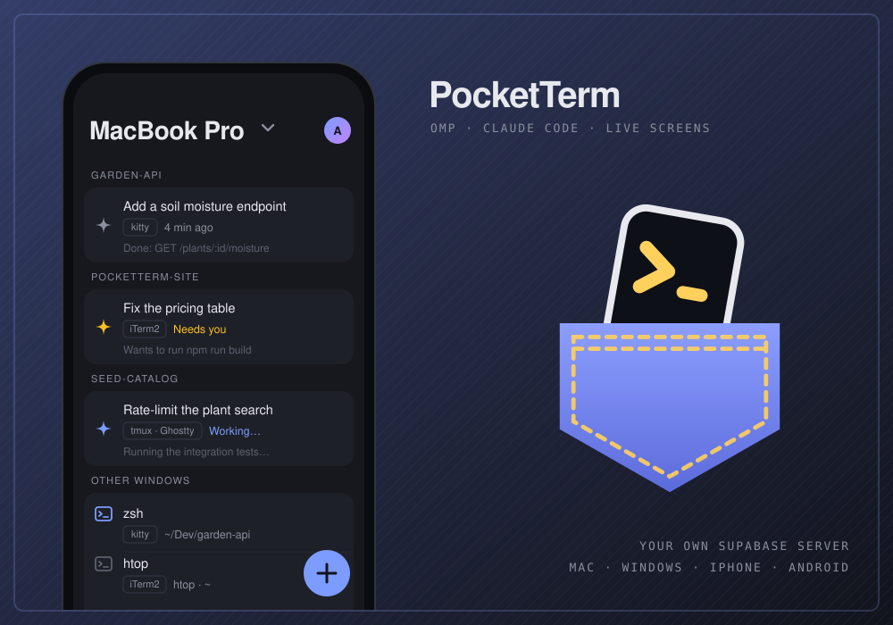
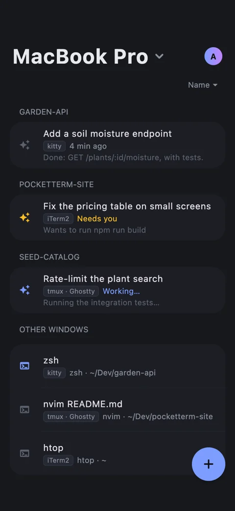
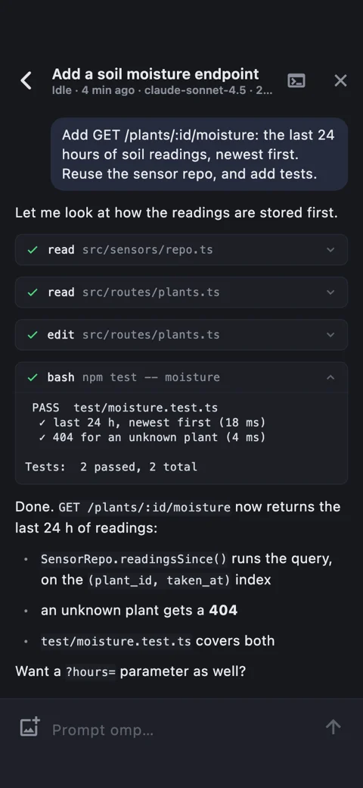
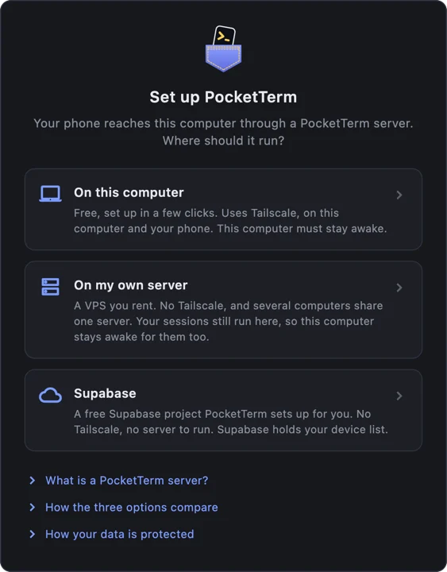
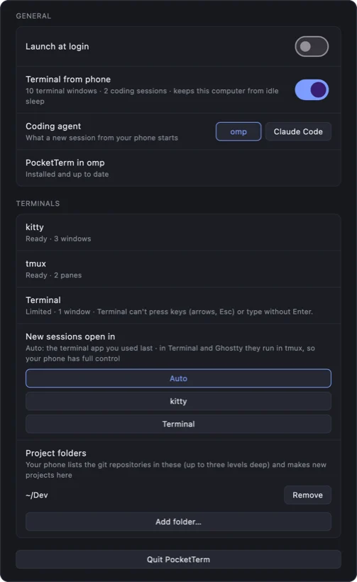

Your computer's coding sessions, in your pocket.
Prompt, steer and answer omp and Claude Code from your iPhone or Android phone, and watch your other terminal windows live. A desktop app on your Mac or Windows PC connects them through a free Supabase project that you own. There is no PocketTerm cloud.
Leave an agent working, walk away, and get a push when it finishes or needs you. Its questions and approvals take a tap.
v0.1.0 · macOS 13 or later, notarized DMG · Windows 10 (1809) or 11, x64 · MIT

What it does
The phone app's Terminal tab lists the computer's omp and Claude Code sessions by project, and its other terminal windows below them. The sessions keep running on the computer; the phone shows and drives them.
Sessions as conversations
Answers stream in as Markdown and tool calls show as cards with their output. Prompt with images, steer or queue, stop a run, and type
/for slash commands.Questions and approvals
When the agent needs you, answer its question, its tool approval or its plan review from the phone, with a tap.
Live screens
Any other terminal window, in color where the terminal provides it. Type into it and press keys like the arrows and Esc.
New sessions
Start your agent, or a shell, in any of your projects without taking the computer's focus. New project… makes the folder first.
Pushes
A push when a run finishes or the agent needs you, plus a Live Activity on iPhone and an ongoing notification on Android for the session you follow.
Several computers
One account, several Macs and Windows PCs. Pick one on the phone; a push opens its session on the computer it came from.
In the app
The phone's Terminal tab and a session, and the desktop app's setup wizard and Settings.

Sessions by project

A session as a conversation

Your server, set up for you

Settings
Rendered by the apps' own screenshot tests: the real screens, on made-up data
Getting started
- Set up your serverOpen PocketTerm on your computer and click Set up my server. It needs a free Supabase account and a GitHub account.
- Sign in with GitHubThe window then becomes Settings. PocketTerm turns on Terminal from phone and Launch at login for you.
- Add your phoneIn Settings, Set up phone… shows a code; scan it in the phone app. A code works once, for 10 minutes.
- Install the integrationIn Settings › Coding agent, pick omp or Claude Code and click Install, then restart running sessions.
Closing the window keeps PocketTerm running in the menu bar on the Mac or the tray on Windows. Quit PocketTerm at the bottom of Settings stops it.
Terminals
What the phone can do with a window depends on the terminal it runs in.
| Terminal | Platform | What works from the phone |
|---|---|---|
| kitty | macOS | Everything: sessions, live screens in color, keys and answers, closing windows |
| WezTerm | macOS, Windows | Everything |
| tmux, in any terminal | macOS | Everything |
| iTerm2 | macOS | Everything except colors |
| Ghostty | macOS | Sessions and keys, no screen; answer questions on the computer |
| Terminal (macOS) | macOS | Sessions and screens in whole lines; answer questions on the computer |
- macOS: with tmux installed (
brew install tmux), sessions the phone starts in Terminal or Ghostty run inside tmux and get full control. kitty needs one click in Settings › Terminals › Set up; iTerm2, Terminal and Ghostty need macOS's Automation permission. - Windows: only WezTerm windows are listed, because it is the only Windows terminal another program can read and type into. The setup wizard and Settings › Terminals have an Install button that opens WezTerm's own installer.
- Claude Code needs version 2.1.287 or later.
Your computer has to be awake, with PocketTerm running and Terminal from phone on. While it is on, PocketTerm keeps the computer from idle sleep, but a closed lid without an external display, sleep you start yourself or shutting down ends it, and the phone then says the computer isn't answering. A push goes out only when nobody has touched the computer for 60 seconds.
Your server, not mine
The setup wizard creates your server in about five minutes in a free Supabase account, which hosts it, and you sign in with GitHub. Rather use a script, or already have a server? See SELF_HOSTING.md.
- Your data
- Sign-in, pairing, the terminal channel and push registrations live in your Supabase project, behind row-level security. The apps hold only its publishable key.
- Only you sign up
- GitHub is the only way in, and after the first account nobody else can sign up unless you allow their email. Phones never use GitHub: they sign in with a code from your computer.
- Nothing stored
- Each computer talks to your phones over its own Realtime channel that only your account can join, and nothing on it is stored. Images you send pass through a private storage bucket in your project and are deleted once the computer has them.
- Encrypted pushes
- Your server encrypts every notification with a key only your phone has. My relay passes the ciphertext to Apple or Google and stores nothing. iPhone Live Activity updates can't be encrypted, so they carry only a session's state.
- No tracking
- No analytics, advertising or tracking SDKs in the apps. Delete account in Settings, on the computer or the phone, removes everything. Read the privacy policy.
Status
- Mac
- Available. Version 0.1.0 is a notarized
PocketTerm-0.1.0.dmgon GitHub Releases, and it updates itself. macOS 13 or later. - Windows
- Available. Version 0.1.0 is
PocketTerm-0.1.0-setup.exeon GitHub Releases. It isn't code-signed yet, so SmartScreen warns: More info, then Run anyway. It installs for your user only, and Settings shows a link when a new version is out. Windows 10 (1809) or later, or Windows 11, x64. - iPhone
- TestFlight, for invited testers only. Not in the App Store yet. iOS 17 or later.
- Android
- Google Play internal testing, for invited testers only. Not public on Google Play yet. Android 8.0 or later.
- Not a tester?
- You can build the phone app from source with your own signing identity.
- License
- Open source under the MIT license. Issues and pull requests are welcome on GitHub.
Support
I'm Danijel, the developer. For questions, setup trouble or ideas, email me and I'll get back to you, or open an issue on GitHub. Setup problems are often covered by the troubleshooting table.
danijel@danyzmaj.comFound a security problem? Please report it privately through GitHub's vulnerability reporting, not in a public issue.